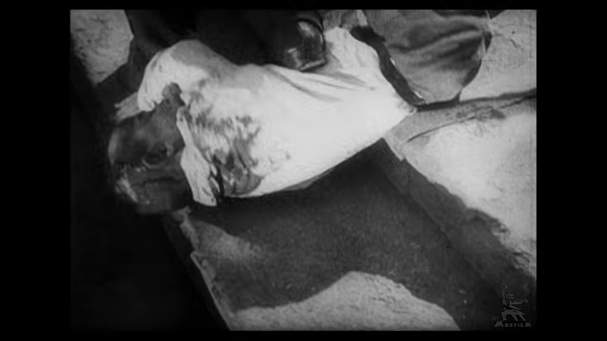
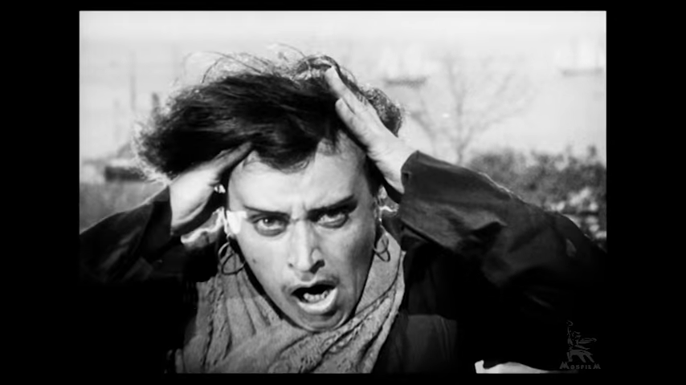
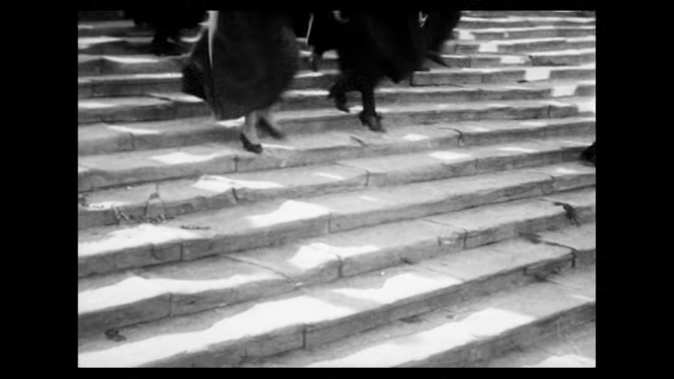
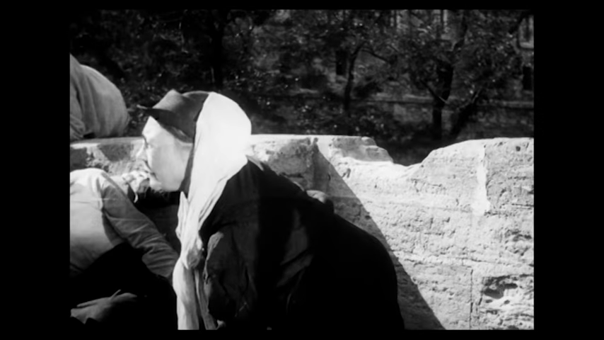
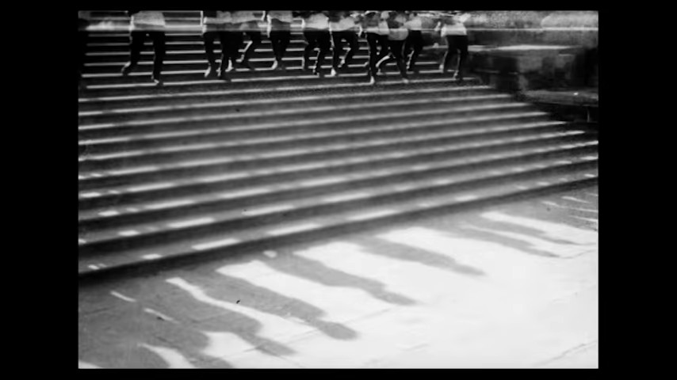
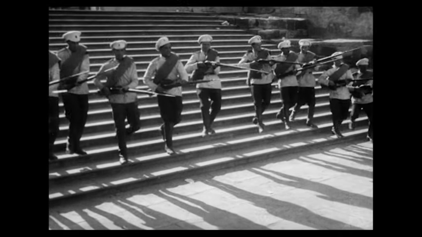

① 特写·惊恐面孔
片段 0:03
- 景别/角度：特写，平视，脸几乎塞满画面
- 剪辑：只有 1～2 秒，突然插进来
- 为什么这样拍：前一个镜头是混乱的人群，突然切到一张脸，观众一下子“认识”了一个受害者，恐惧就具体了。
每日拉片 · 第 001 期 · 2026-10-13 · 景别 · 蒙太奇 · 构图
没有一句台词，爱森斯坦只靠 “大远景的人群 ↔ 特写的面孔”来回切换，再让镜头越剪越短，就把一场屠杀拍成了观众喘不过气的恐慌。

片段 0:03

0:06

0:18

0:33

1:00

1:03
整体节奏：越往后，单个镜头越短（从 3～4 秒缩到 1 秒左右），士兵的步伐又有固定节拍，和慌乱的剪辑互相冲撞，紧张感一路往上推。
A. 手机模仿：找一段楼梯或走廊，拍 4 个镜头，每个 2～3 秒： 1. 大远景（整段楼梯，人很小）→ 2. 特写（一只匆忙的脚）→ 3. 中景（人回头）→ 4. 特写（脸/眼睛）。 按顺序剪在一起，再试着把每个镜头砍到 1 秒，比较两版的紧张感有什么不同。
B. AI 提示词复刻：用即梦/可灵/Veo 分别生成 2 个镜头，再拼起来：
1920s black and white silent film, extreme wide shot from high angle, crowd of people running down a huge stone staircase in panic, film grain, high contrast, Soviet cinema style1920s black and white silent film, extreme close-up of an old woman's terrified face, shouting, harsh sunlight, film grain, handheld feeling拼好后问自己：只看镜头 1 和两个一起看，感觉差在哪？
clip.mp4，取自原片约 49:40–51:10，共 90 秒，已加中文技法字幕